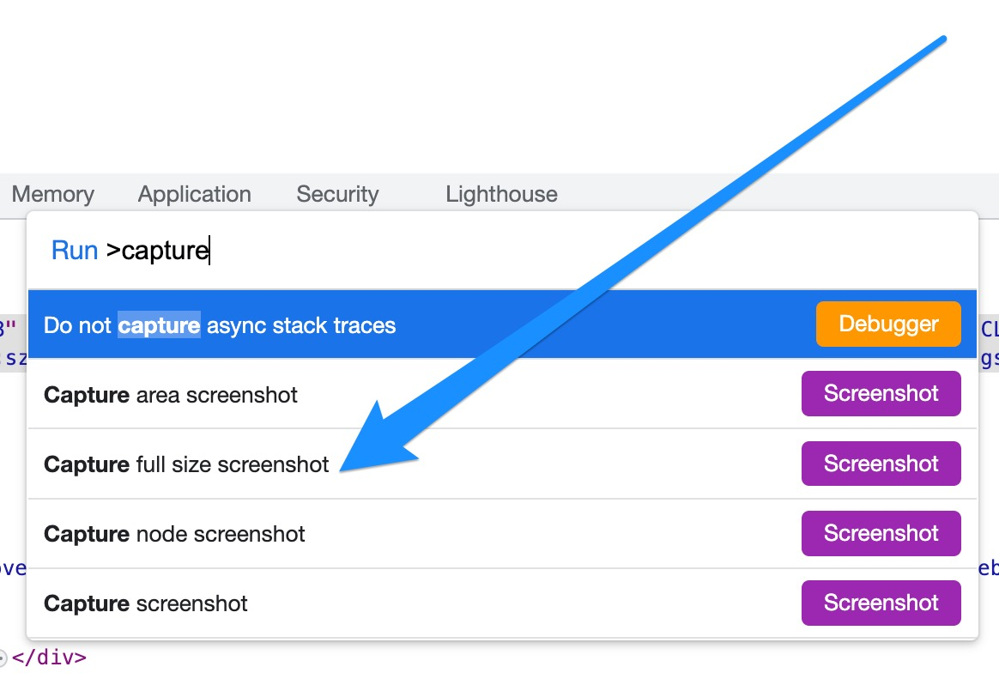

Chrome浏览器让你欲罢不能的三个小技巧
王福强
视频帧截图
原来看到视频中某个画面我们想截图留存的时候，一般会用系统的截图软件或者特定的chrome插件，现在不用了，最新的chrome浏览器里，我们只要连续两次鼠标右键，就可以调出类似如下的菜单：

选择Copy Video Frame，截图就到了系统剪切板了，随便你粘贴到哪里，是粘贴到微信的文件助手，还是发送个谁，又或者粘贴到哪个word文档…
解除页面文字复制的限制
有些网站会禁止用户复制页面里的文字内容，其实，对于开发人员来说没啥难度，对于普通用户来说，可能还有些难度。
原来有人给了这么个代码片段：
const dontTreadOnMe = (e) => e.stopImmediatePropagation();
document.addEventListener('paste', dontTreadOnMe,true);打开chrome的devtools，粘贴到Console里执行就可以了。
现在不用那么麻烦，打开devtools之后，CTRL+Shift+P(windows)或者CMD + Shift + P(Macos)调起Chrome到命令执行面板（Command Palette）， 输入Disable搜索出Disable Javascript然后回车就行了:

现在就可以复制了，谁tmd也拦不住老子；）
NOTE
要恢复JavaScript，同样打开命令执行面板，搜索并执行
Enable Javascript回车执行就可以了。
网页全屏截图
同样打开devtools之后，CTRL+Shift+P(windows)或者CMD + Shift + P(Macos)调起Chrome到命令执行面板（Command Palette）， 输入capture关键词搜索：

从中选择Capture full size screenshot，搞定！
「为AI疯狂」星球上，扶墙老师正在和朋友们讨论有趣的AI话题，你要不要⼀起来呀？^-^
这里
- 不但有及时新鲜的AI资讯和深度探讨
- 还分享AI工具、产品方法和商业机会
- 更有体系化精品付费内容等着你，加入星球(https://t.zsxq.com/0dI3ZA0sL) 即可免费领取。(加入之后一定记得看置顶消息呀！)

存量的时代，省钱就是赚钱。
在增量的时代，省钱其实是亏钱。
避坑儿是省钱的一种形式，更是真正聪明人的选择！
弯路虽然也是路，但还是能少走就少走，背后都是高昂的试错成本。
订阅「福报」，少踩坑，少走弯路，多走一步，就是不一样的胜率！